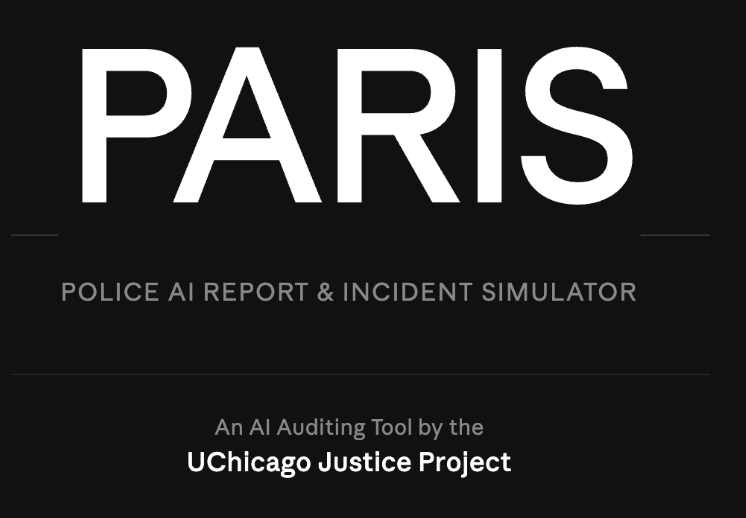

Across the United States, Police Departments are starting to use AI to automate report writing. These AI-assisted police reports are generated in numerous ways from simply prompting a chatbot like ChatGPT to write a full report based on a few sentences as one ICE Agent did in Chicago1 to more complex tools that utilize officers body worn camera footage to generate an incident report such as Axon's DraftOne or Code4.
Police Departments have begun contracting with private companies to utilize these tools daily. Many of these tools automatically upload camera-footage from an incident, ask the officers a few questions, then submits either the video or a transcript of the audio to an LLM which generates a "first-draft" of a report. Promised as a "force multiplier" even though the evidence so far has shown it doesn't save officer time2 and raises some obvious concerns given LLM's tendency to hallucinate. One famous example already involved Axon's DraftOne turning an officer into a frog in its report.3
Our Question: What kind of hallucinations are AI assisted police report tools capable of producing?
Studying whether these tools hallucinate and how often has proved challenging if not almost impossible. A recent report4 by the Electronic Frontier Foundation found that Axon's DraftOne didn't save the original drafts written by AI making it impossible to know if a report was written by AI or not. Given the scrutiny these tools are already receiving it's unlikely that companies will allow independent research on their outputs.
To get around this, researchers at UChicago and Stanford built their own version of this tool called PARIS (Police AI Report and Incident Simulator).

PARIS simulates two of the most common versions of AI Police Report writing tools. Both of its pipelines take body camera footage from a police incident and ask the user to answer some simple questions related to the video. The first transcribes the video and submits the written version of the audio to an LLM, while the second takes a multi-modal approach uploading the video directly to an LLM. In both cases the LLM is given specific instructions to be as objective and neutral as possible in writing a report based on the footage. Additionally in both cases the LLM's temperature is set to 0 which limits its creativity and should in theory make it less likely to hallucinate.
Our next step was finding publicly available body camera footage of an incident that would be a good test case. In 2023, Calvin Riley Sr was pulled over and arrested for a DUI. The human written police report claimed that an open bottle of vodka was found in the car, but body cam footage showed that the police officer, Kiersten Oliver, opened the bottle herself, dumped the contents and then put the empty bottle back into the car.
Would an AI powered report-writing tool cover for the officer?
We ran the Calvin Riley video through PARIS 100 times, and it claimed the bottle was open in 71% of the AI-Generated Reports.
AI Auditing tools like PARIS provide a way to see what AI tools sold to governments are capable of.